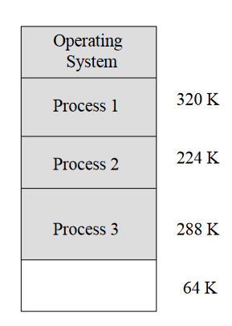
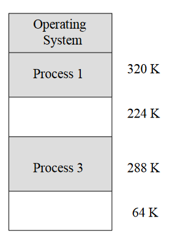
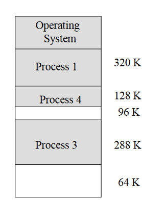

内存管理
原因和需求
原因
- 软件对内存的需求很大,如果不加管理,会无限制使用内存
- 快速存储器成本太高,需要好好利用内存
需求
- 支持多程序和多用户
- 充分利用空间
- 给每一个程序足够大的逻辑运行空间
- 存储保护
存储管理的功能
- 存储的分配和回收:时存储管理的重点,重点时讨论算法和相应的数据结构.
- 存储的共享和保护:可以理解成对地址空间的权限(读,写,运行).
- 地址变换: 可执行文件生成时的链接计数,程序加载时的重定位技术,进程运行时硬件和软件的地址变换技术.
- 存储的容量扩充:不是增加内存条的容量扩充,而是当需要更多内存的时候,内存的覆盖,交换,虚拟内存.
概念解析:
- 地址空间:源程序经过编译之后得到的目标地址,存在于它所限定的地址范围类,这个范围称为地址空间.简言之,地址空间就是逻辑地址的集合.
- 存储空间:主存中一系列存储信息的物理单元的集合,这些单元的编号称为物理地址或绝对地址.简言之,存储空间就是物理地址的集合.
简言之,地址空间就是进程认为自己使用的空间,是一个抽象空降,存储空间就是实际操作访问的物理空间,这二者就是CO中提到的虚拟内存技术.
- 内碎片:如果一个分区没有被完全占用,则剩下的空间被称为内碎片.该碎片在操作系统眼里已经被占用,无法整理.
- 外碎片: 占用分区之间的空闲分区,这片分区如果小于载入程序则无法利用,被浪费.该碎片可以整理后清楚,是内存系统性能下降的主要原因.
  
单道程序的内存管理
整个系统中出了操作系统之外只剩这一个程序,所以整个内存可以供他使用,其地址也可以固定.就像整个地区如果只有一个部落,那部落肯定找一个最好的地方发展下去.如果有多个部落互相抢占资源,那肯定存在部落被顶替掉的情况.
条件
- 在单道程序环境下,整个内存里只有两个程序,一个是用户程序,一个是操作系统.
- 操作系统占据的空间是固定的.
- 因此可以将用户程序加载到同一个地址,即用户程序永远可以从同一个地方开始运行.
静态地址翻译
因为程序的地址固定,所以可以在程序运行之前就计算出所有的物理地址.使用此方法,用户无需知道关于内存的知道,操作系统直接访问地址即可,而且因为没有其他程序,那么整个程序在这个地址就是安全的.
优缺点
- 优点:运行简单,没有地址翻译,运行速度快
- 缺点:整个内存只给一个程序,造成资源浪费.而且如果程序必内存大无法加载,则无法运行.
多道程序的内存管理
因为内存有多个程序,如何分配内存供多个程序使用,并且让这些程序并行执行以提高效率是重点.
空间的分配
- 把内存分成一些大小相等或者不等的分区,每个应用程序占用一个或者多个分区,操作系统占用一个分区.
- 适用于多道程序系统和分时系统,支持并发,但难以进行内存分区的共享.(每个程序共享整个内存,难以对某一些地址空间进行权限控制)
固定式分区分配
方法
- 固定(静态)式分区分配:这个方法是程序适应分区,在系统初始化之后将内存划分成若干个任意大小的区域,然后将这些区域分配给进程.
- 相同大小的分区:适用性差,只适用于多个相同程序的并发执行
- 优点:算法实现简单,方案运行开销小
- 缺点:出现了内碎片,分区数目限制之后,最大载入程序数量也确定,限制了并发执行程序的数量.
分配方式
- 单一队列的分配方式:当加载程序是,选择一个闲置且足够大的分区加载.多个程序排在同一个队列.
- 多队列的分配方式:根据程序的大小分成不同队列,排在不同大小的分区后面.
可变式分区
方法
闲置空间的管理
位图表示法
给每个分区赋予一个滋味,用来记录该分配单元是否闲置.
链表表示法
将分配单元按照是否闲置链接起来.每一个结点分别记录该空间是否空闲,空间的起止地址以及指向下一个结点的指针.
两种方法分析
位图表示法
- 空间成本固定,不依赖于内存中程序数量
- 时间成本低,只需要修改位图即可,一次改1bit
- 没有容错能力,如果存储单元出错,无法分辨该位置的1是被占用还是出错.
链表表示法
每张表的表项都可称为存储控制块MCB(Memory Control Block),包括AMCB(Allocated MCB)和FMCB(Free MCB).
空闲分区控制块按某种次序构成FMCB链表接口,但分区被分配之后,其前后项指针无意义.
分区分配操作
分配内存
- 设size是最小分区大小,不能再分割
- 如果$请求分区大小 \gt 分区大小$检索下一个表项
- 如果$请求分区大小+size \lt 分区大小$则将分区中按照相应大小划分一块,剩下的部分留在空间分区表中.
- 如果$请求分区大小+size \ge 分区大小$则将整个分区都分给程序.
回收内存
- 回收分区邻接空闲分区则将空闲分区和回收分区合并
- 回收分区不邻接空闲分区则在空闲分区表中新建表项放置回收分区
搜索算法
基于顺序搜索的分配算法
算法介绍
- 首次适应算法:每个空白区按照地址顺序排成链表,从头找到尾,分配出第一个满足条件的分区
- 下次适应算法:把空白区构成一个循环链表,每一次查询从上一次的位置出发,分配出第一个满足条件的分区
- 最佳适应算法:遍历所有空白区,分配最佳的分区
- 最坏适应算法:遍历所有空白区,分配最大的空白区
算法特点
- 首次适应算法:低地址地址会被不断划分出去,之后的查找时间开销变大
- 下次适应算法:是空间使用更加均匀
- 最佳适应算法:分配出的空间是最佳的,但是会剩下很多特别小的碎片,而且时间开销大
- 最坏适应算法:剩下比较大的碎片,不能满足之后的大程序,而且时间开销大
总结
该类方法只适用于小系统,如果系统很大,则分区很多,每次的查找开销很大基于索引搜索的分配算法
快速适应算法
快速适应算法:将空闲分区按照容量大小分类,并把常用大小的分区单独建立链表,并对多个链条设立管理索引链表. - 优点:查找效率高,根据长度分类,保证了内存分配结果的最优,不产生碎片
- 缺点:算法复杂,开销大,分配空间的时候以进程为单位,存在一定的浪费.
伙伴系统
在分配存储块时将一个大的存储块分裂成两个大小相等的小块，这两个小块就称为 “伙伴”,对于不同大小分区建立链表.伙伴系统规定分区的大小一定是2的k次幂,$n \le k \le m$,其中$2^n$是最小分区大小,$2^m$是最大分区大小,通常为整个内存
在系统运行中可能因为不断划分形成若干个不连续的空闲分区
内存管理模块保持有多个空闲块链表,空闲块大小为2的整数次幂
内存分配
- 在程序启动的时候只有一个空闲块(整个内存)
- 当一个大小为n的进程申请内存的时候向上取2的整数次幂($2^n$)寻找空闲块,如果没有空闲块,则去$2^{n+1}$去寻找.
- 对于$2^{n+1}$大小的空闲分区,分出$2^n$用于分配,另一半加入管理$2^n$的链表中,这两个分区称为伙伴
- 如果$2^{n+1}$大小的空闲分区不存在则依次类推
内存释放
将被释放块与其伙伴合并成一个更大的空闲块,然后一直合并下去